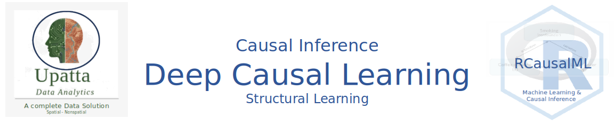
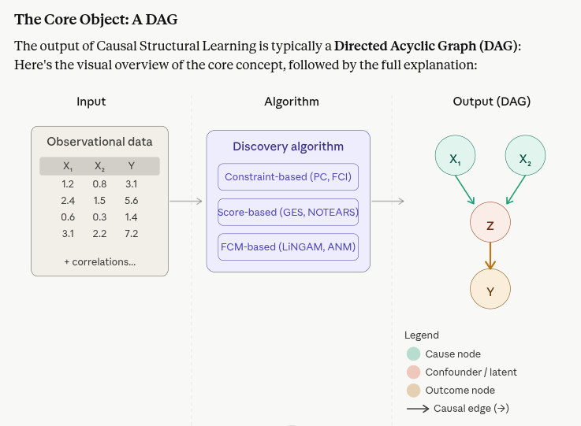

5.3 Causal Structural Learning: An Introduction
Causal Structural Learning is the foundational layer of any causal machine learning pipeline. It’s the process of learning the causal graph (DAG) directly from data — without being told which variables cause which. This is different from causal inference, which assumes you already know the graph and estimates effect sizes. Structural learning discovers the graph itself.
Causal Structural Learning
Causal Structural Learning (also called Causal Discovery or Structural Causal Model Learning) is the process of automatically inferring causal relationships from data — essentially learning who causes whom without requiring prior knowledge or randomized experiments.
Instead of assuming a causal graph (like in causal inference), Causal Structural Learning discovers the graph itself from observational or interventional data.
The Core Object: A DAG
The output of Causal Structural Learning is typically a Directed Acyclic Graph (DAG):Here’s the visual overview of the core concept, followed by the full explanation:

What Is Causal Structural Learning?
Causal Structural Learning is the task of learning the causal graph (DAG) directly from data — without being told which variables cause which. It answers:
“Given data on X₁, X₂, X₃, and Y — who causes whom?”
This is different from causal inference, which assumes you already know the graph and estimates effect sizes. Structural learning discovers the graph itself.
Core Concepts
The output: a DAG A Directed Acyclic Graph where each node is a variable and each arrow A → B means “A causally influences B.” The “acyclic” constraint means no feedback loops — causes flow in one direction.
The fundamental challenge You only observe correlations in data. Many different DAGs can produce the same correlations. This is called the Markov Equivalence Class — a set of graphs that are statistically indistinguishable from observational data alone.
Faithfulness assumption Most algorithms assume that if a conditional independence holds in the data, it corresponds to a missing edge in the true graph — and vice versa. This is what allows statistical tests to constrain the graph.
Three Algorithm Families
1. Constraint-Based (test correlations, remove edges)
The most intuitive family. They work by:
- Start with a fully connected graph
- Run conditional independence tests between every pair of variables
- Remove edges where variables are independent given some conditioning set
- Orient remaining edges using v-structures (colliders like A → C ← B)
- Apply orientation rules (Meek rules) to orient as many remaining edges as possible
Key algorithms: PC algorithm, FCI (handles latent confounders), RFCI (robust FCI).
The output is often a CPDAG (Completed Partially Directed DAG) — a graph with some directed and some undirected edges, representing the full Markov equivalence class.
2. Score-Based (search over graph space)
Instead of testing independence, these algorithms assign a score to each candidate graph and search for the highest-scoring one.
Common scores: - BIC / BDeu — penalize complexity to avoid overfitting - Log-likelihood — how well the graph explains the data
The search problem is NP-hard (exponential graph space), so practical algorithms use greedy strategies: - GES (Greedy Equivalence Search) — two-phase: add edges that improve score, then remove those that don’t - NOTEARS — reformulates the DAG search as a continuous optimization problem using a smooth acyclicity constraint, making it solvable with gradient descent - DAG-GNN — learns graph structure end-to-end with neural networks
3. FCM-Based / Asymmetry-Based (exploit functional form)
These are the most powerful for full orientation (not just Markov equivalence). They exploit the fact that cause and effect have an asymmetric relationship in the functional form of the data.
The key insight: if X → Y, then the residuals of regressing Y on X are independent of X. But if you reverse it (Y → X), the residuals won’t be independent. This asymmetry reveals direction.
Key algorithms: - LiNGAM — assumes linear relationships with non-Gaussian noise. The non-Gaussianity breaks the equivalence class and allows full graph orientation - ANM (Additive Noise Model) — Y = f(X) + noise, tests for independence of residuals - PNL (Post-Nonlinear model) — generalization of ANM for more complex functional forms
How It All Fits Together
Observational Data
↓
[ Statistical Tests / Score / Functional Asymmetry ]
↓
Markov Equivalence Class ←→ Partially Directed Graph
↓ (with extra assumptions or interventional data)
Fully Oriented Causal DAG
↓
Policy Learning / Causal Inference / Intervention DesignThe identified DAG then feeds directly into policy learning — knowing the causal structure tells you which variables are valid adjustment sets, which are confounders, and which interventions are identifiable. This is why structural learning is the foundational first step for any serious causal ML pipeline.
Available Tools
| Algorithm | Package | Language |
|---|---|---|
| PC, FCI, GES | causal-learn |
Python |
| LiNGAM family | lingam |
Python |
| NOTEARS, DAGMA | notears, dagma |
Python |
| GRF-based discovery | grf |
R |
| Full pipeline | DoWhy, pyWhy |
Python |
| Tetrad suite | py-tetrad |
Python/Java |
Causal Structural Learning is the prerequisite layer beneath everything else — policy learning, treatment effect estimation, and counterfactual reasoning all assume a known or learned causal graph to be valid.
Why Deep Learning for Causal Structure Learning?
The three core strengths of deep learning for causal learning are: strong representational capabilities for unstructured data, strong fitting ability to approximate complex functions, and the capacity to model data generation mechanisms — for example, adversarial learning implicitly generates counterfactuals (GANs), while disentanglement mechanisms explicitly model the process via variational autoencoders (VAEs).
Traditional deep learning models rely on learning from extensive data but may inadvertently capture spurious correlations, leading to models that lack interpretability and robustness. Causal deep learning replaces the correlation model with a stable and interpretable causal model to mitigate this.
Major Model Families

Family 1 — Continuous Optimization (Gradient-Based DAG Learning)
The foundational breakthrough in this family came from reframing the combinatorial DAG search as a smooth, differentiable optimization problem.
NOTEARS (NeurIPS 2018) was the pioneering model here. The key insight is an algebraic acyclicity constraint: a matrix W represents a DAG if and only if tr(e^(W⊙W)) - d = 0. This smooth constraint lets you optimize over graph structure with standard gradient descent. NOTEARS formulates the problem into a continuous optimization framework with an acyclicity constraint to learn DAGs, allowing the utilization of deep generative models for causal structure learning. However, NOTEARS has been shown to lack scale-invariance — it identifies a parsimonious DAG that explains residual variance, which makes it unsuitable for identifying truly causal relationships from dimensional quantities without standardization.
NOTEARS-MLP extends the original by replacing the linear SEM with multilayer perceptrons, handling nonlinear relationships.
GraN-DAG (ICLR 2020) takes this further. GraN-DAG relies on the proper training of neural networks with a stochastic gradient method that scales well with both sample size and number of parameters. Unlike DAG-GNN, which uses strong parameter sharing between conditional densities, GraN-DAG learns fully independent conditional distributions per node.
DAGMA and DAG-NoCurl are more recent refinements. DAG-NoCurl is developed based on graph Hodge theory, which shows that a DAG can be decomposed into curl-free, divergence-free, and harmonic components — the curl-free component being an acyclic graph — providing a more efficient parameterization of the DAG space.
CASTLE (NeurIPS 2020) from the van der Schaar Lab uses causal structure as a regularizer during supervised learning, jointly learning the graph and the prediction model. CASTLE incorporates structural equations to significantly reduce the hypothesis space of a model, using causal structure as an inductive bias rather than just standard regularization.
2. GNN-Based Discovery
These models treat the causal graph itself as a graph and use GNNs to learn edge existence probabilities.
DAG-GNN (ICML 2019) is the most prominent. DAG-GNN generalizes NOTEARS by considering nonlinearity in structural equation models using a variational autoencoder with encoder and decoder parameterized as neural networks, where a latent vector Z replaces the noise term of linear SEMs and can have arbitrary dimensionality.
GAE (Graph Autoencoder) framework improves on DAG-GNN. GAE improves training speed and performance over DAG-GNN for both linear and nonlinear synthetic datasets.
NRI (Neural Relational Inference) learns interaction graphs from trajectories of dynamical systems without supervision over the graph structure — useful when observing time-series of interacting agents.
DiBS takes a Bayesian approach, maintaining a distribution over possible DAGs rather than committing to a single graph. Unlike DAG-GNN and NOTEARS which optimize a single structure per instance, probabilistic GNN-based methods predict a probability distribution over DAGs directly from edge representations in a single forward pass, enabling uncertainty quantification and generalization across datasets.
In the medical field, GNN-based causal models like CiGNN use spatiotemporal GNNs for applications such as continuous blood pressure estimation, first establishing a causal graph between physiological variables, then learning from it. In neuroscience, the DCRNN model uses GNNs with convolutional and recurrent networks for inference of causal relations in brain networks.
3. Generative Causal Models
These combine deep generative frameworks (VAEs, GANs) with causal structure to model the full data-generating process.
CEVAE (Causal Effect VAE) uses a variational autoencoder to jointly infer latent confounders and causal effects. It models: latent Z → treatment T, latent Z → outcome Y, handling unmeasured confounding that standard models cannot.
CausalGAN learns causal implicit generative models using adversarial training. CausalGAN learns causal implicit generative models via adversarial training, enabling sampling from interventional and counterfactual distributions. Recent extensions include FeDCM for federated settings and modular deep causal generative models for high-dimensional causal inference.
CGNN (Causal Generative Neural Networks) and SAM (Structural Agnostic Modeling) both use adversarial losses to learn conditional neural generators for each variable. SAM learns conditional neural network generators using adversarial losses but does not enforce acyclicity, while CGNN requires an initial skeleton to learn from multivariate data.
A recent architecture published in Nature Machine Intelligence (2025) combines convolutional and graph neural networks within a causal risk framework, demonstrating effectiveness under high dimensionality, noise, and data limitations — particularly for large-scale biological applications with thousands of variables.
4. Reinforcement Learning-Based Structure Search
Rather than gradient descent, these methods use RL agents to search the combinatorial space of DAGs.
RL-BIC trains an RL agent (typically using actor-critic or policy gradient) where the reward is the BIC score of a candidate graph. The agent learns to construct edges one at a time, building up the DAG incrementally.
CORL / CURL learn causal ordering via RL — first finding the topological order of nodes, then orienting edges within that order. This decomposes the hard joint search into two easier sub-problems.
These RL methods are especially useful when the search space is very large and gradient-based approaches get stuck in poor local minima.
Comparison Summary
| Model | Architecture | Handles nonlinearity | Scalability | Key strength |
|---|---|---|---|---|
| NOTEARS | MLP + smooth constraint | Partially | Medium | First differentiable DAG method |
| GraN-DAG | Neural conditionals | Yes | Medium | Flexible per-node models |
| DAGMA | Log-det acyclicity | Yes | High | More stable optimization |
| DAG-GNN | VAE + GNN | Yes | Medium | Vector-valued variables |
| DiBS | GNN + Bayesian | Yes | Medium | Uncertainty over graphs |
| CEVAE | VAE | Yes | Medium | Latent confounders |
| CausalGAN | GAN | Yes | Low-Med | Interventional sampling |
| CASTLE | Regularized DNN | Yes | High | Joint supervised + causal |
| RL-BIC | RL agent | Yes | Low | Avoids local minima |
Causal deep learning operates along two main axes: the structural scale — concerning the links between variables — and the parametric scale — concerning the shape of the functions that model those links — with time as a third special dimension given that causes precede effects. Together, these four families cover that full landscape, from lightweight differentiable optimization to rich generative and Bayesian approaches.
Summary and Conclusion
Deep learning has revolutionized causal structure learning by enabling flexible, scalable, and powerful methods to discover causal graphs directly from data. From continuous optimization techniques that reframe DAG search as a differentiable problem, to graph neural networks that learn edge probabilities, to generative models that capture the full data-generating process, and reinforcement learning approaches that navigate the combinatorial search space — deep learning has provided a rich toolkit for causal discovery. These methods have been applied across domains, from healthcare to neuroscience, demonstrating their ability to uncover complex causal relationships in high-dimensional, noisy data. As the field continues to evolve, we can expect even more sophisticated models that further bridge the gap between correlation and causation, ultimately enabling more robust and interpretable machine learning systems.
References
Bello, K., Aragam, B., & Ravikumar, P. (2022). DAGMA: Learning DAGs via M-matrices and a log-determinant acyclicity characterization. In Advances in Neural Information Processing Systems (NeurIPS). https://arxiv.org/abs/2209.08037
Kocaoglu, M., Snyder, C., Dimakis, A. G., & Vishwanath, S. (2018). CausalGAN: Learning causal implicit generative models with adversarial training. In International Conference on Learning Representations (ICLR). https://arxiv.org/abs/1709.02023
Kyono, T., Zhang, Y., & van der Schaar, M. (2020). CASTLE: Regularization via auxiliary causal graph discovery. In Advances in Neural Information Processing Systems (NeurIPS). https://arxiv.org/abs/2009.13180
Lachapelle, S., Brouillard, P., Deleu, T., & Lacoste-Julien, S. (2020). Gradient-based neural DAG learning. In International Conference on Learning Representations (ICLR). https://arxiv.org/abs/1906.02226
Louizos, C., Shalit, U., Mooij, J., Sontag, D., Zemel, R., & Welling, M. (2017). Causal effect inference with deep latent-variable models. In Advances in Neural Information Processing Systems (NeurIPS). https://arxiv.org/abs/1705.08821
Yu, Y., Chen, J., Gao, T., & Yu, M. (2019). DAG-GNN: DAG structure learning with graph neural networks. In Proceedings of the 36th International Conference on Machine Learning (ICML) (pp. 7154–7163). https://proceedings.mlr.press/v97/yu19a.html
Zheng, X., Aragam, B., Ravikumar, P., & Xing, E. P. (2018). DAGs with NO TEARS: Continuous optimization for structure learning. In Advances in Neural Information Processing Systems (NeurIPS). https://arxiv.org/abs/1803.01422
|